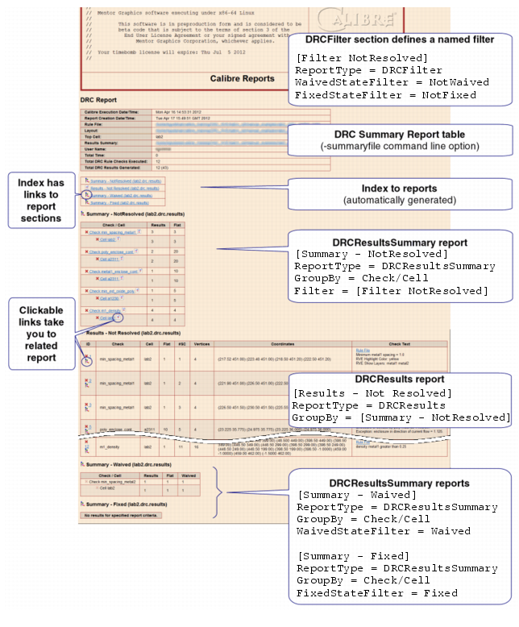

An example of
a basic DRC HTML report that can be run on any database is provided.
The example outputs the following sections
in the HTML report:
Tree view for all results that are not
fixed or waived.
Detailed results view for all results
that are not fixed or waived.
Tree view for waived results.
Tree view for fixed results
The HTML configuration file uses these features:
A named filter for not fixed and not
waived results. Named filters allow you to easily apply a complex
filter that is used often.
Section-specific filters.
Several useful options are commented
out — allowing you to easily adapt the configuration file for your
own use.
Procedure
- Create the DRC HTML Report Configuration File Format by cutting and pasting the following
text into a file named rpt_basic.ini.
; ;Default DRC HTML report configuration file
; ;Comments for explanation are preceded with two semicolons
; ;Commented-out key values are preceded with one semicolon
[Common]
LayoutWidth = 200
LayoutHeight = 200
WorldView = 1
; ; (optional)open Density DBs,which do not open automatically
;OpenDensityDBs = 1
; ;optional customization file
;CustomizationFilePath = ./Custom.htm
; ;optional path to DESIGNrev preferences file
;DrvOptionsFilePath = ../
; ;Specify a named filter for not fixed and not waived
[Filter NotResolved]
ReportType = DRCFilter
WaivedStateFilter = NotWaived
FixedStateFilter = NotFixed
; ;Show tree for not fixed and not waived results
; ;Use ApplyTo to process all side RDBs
[Summary - Not Resolved]
ReportType = DRCResultsSummary
ApplyTo = All
GroupBy = Check/Cell
Filter = [Filter NotResolved]
; ;Show details view for not fixed and not waived results
[Results - Not Resolved]
ReportType = DRCResults
; ;inherit values from the Summary - Not Resolved section
GroupBy = [Summary - Not Resolved]
; ;To include a highlight image, need to use the
; ;command line option -input db_to_layout_map file
; ;and specify the Highlight key
; Highlight = 1
[Summary - Waived]
ReportType = DRCResultsSummary
GroupBy = Check/Cell
WaivedStateFilter = Waived
[Summary - Fixed]
ReportType = DRCResultsSummary
GroupBy = Check/Cell
FixedStateFilter = Fixed
- Enter the following at the
command line:
calibre -rve -drc results_db -report rpt_basic.ini -outputdir html_out
If your Calibre run produced
a DRC Summary Report, you can include it by adding the following
command line option:
... ‑summaryfile drc_summary
This command line option adds
a summary table to the HTML report; the summary table includes information
included in the DRC Summary Report, such as execution date, rule
file, and user name.
Note: Layout
Input Exception, Pathchk, and Waiver RDBs connected to the main
results database (side RDBs) are opened and processed automatically.
You can specify that other RDB types are also processed automatically;
see “Automatically Process Side (Auxiliary) RDBs”.
- Open the report index.htm in
the output directory html_out using
a web browser.
Results
The given configuration file produces
the report shown in the following figure.
Figure 1. DRC HTML Report Basic Output